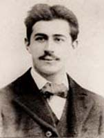

Vedat Tek
Mehmet Vedat Tek (1873–1942) was a Turkish architect who was one of the leading figures of the First Turkish National Architectural Movement.
Early life and education
Of Cretan Muslim origin, Vedat Tek was born in Istanbul to the governor of Baghdad Province Giritli Sırrı Pasha and composer Leyla Saz as their second son. His older brother was Yusuf Razi Bel (1870–1947), who later became an engineer. After finishing Galatasaray High School in Istanbul, he was sent to France for higher education. He attended Académie Julian for studies in painting and then studied at the École Centrale Paris, graduating with a degree in civil engineering before he got his further education in architecture at the École des Beaux Arts in Paris. He thus became the first formally educated Turkish architect.
Career
Early work
After returning home in 1897, Vedat Tek contributed with his projects to the forming of the first Turkish national architecture movement (Turkish: Birinci Ulusal Mimarlık) along with Mimar Kemaleddin Bey. He served awhile as the chief architect of the Engineering Corps at the Ministry of War. Later, Sultan Mehmet V appointed him chief court architect. He also gave lectures at Sanayi-i Nefise Mekteb-i (today's Mimar Sinan University of Fine Arts) and Mühendis Mekteb-i Alisi (today's Istanbul Technical University). Vedat Tek was one of the first Turkish lecturers at the Academy of Fine Arts.
Architect of the Post and Telegraph Ministry
Vedat Tek became popular as an architect because of his project for the Kastamonu Governor's Office (1902). He was appointed architect for the Ministry of Post and Telegraph in 1905. His main assignment was the Istanbul Main Post Office, his largest achievement in his architectural career.
Chief architect of the Ottoman Palaces
Vedat Tek became the chief architect of the palaces after Sultan Abdul Hamid II left the throne in 1909 and was succeeded by Mehmed V. As such, he restored about 20 palaces. But when Mehmed VI became sultan, he was dismissed.
Republic era
After the proclamation of the Republic of Turkey, Vedat Tek was called to Ankara. He built the second building for the Grand National Assembly of Turkey and the Gazi Pavilion there. While he was preparing plans for Ankara Palas, however, the project was taken out of his hands and given to Mimar Kemaleddin.
Projects and buildings
İzmit Clock Tower, İzmit (1901)
Kastamonu Governor's Office, Kastamonu (1901)
Istanbul Main Post Office, Sirkeci (1905–1909)
Istanbul Land Registry and Cadastre Building, Sultanahmet (1908)
House of Vedat Tek, Nişantaşı (1913)
Aviation Martyrs' Monument, Fatih (1914–1916)
Haydarpaşa Ferryboat Pier, Haydarpaşa (1915–1917)
Moda Ferryboat Pier, Moda, Kadıköy (1917) (used since July 1, 2001 as a restaurant)
Doğancılar Public Park, Üsküdar (1920)
Çankaya Gazi Mansion, Ankara (1924)
Second Turkish Grand National Assembly Building, Ankara (1924).[1][2] (used since October 20, 1980 as the Republic Museum)
Ankara Palas, Ankara - Designed in 1924 by him as Ministry of Health building, however completed in 1928 by Mimar Kemaleddin Bey as a hotel for the members of the Turkish Grand National Assembly. It is used today as an official state guest house.
other

Emre Arolat

Ahmet Kemalettin

Zeynep Fadıllıoğlu